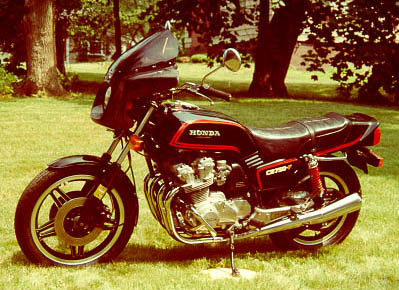
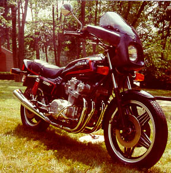

This is my newly restored 1980 Honda CB750F Super Sport
This bike was totaled in September 1997 when some knuckle head decided to make a U-turn in an intersection that I had the right of way through.
After surviving a broken back I managed to get a new front end, wheel, pipes and a used frame and restored this gem to its former glory.
Typical Honda, it runs like a Swiss watch.